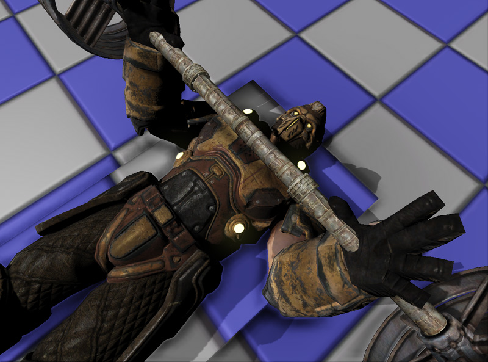

UDN
Search public documentation:
UsingSkeletalControllers
日本語訳
中国翻译
한국어
Interested in the Unreal Engine?
Visit the Unreal Technology site.
Looking for jobs and company info?
Check out the Epic games site.
Questions about support via UDN?
Contact the UDN Staff
中国翻译
한국어
Interested in the Unreal Engine?
Visit the Unreal Technology site.
Looking for jobs and company info?
Check out the Epic games site.
Questions about support via UDN?
Contact the UDN Staff
Using Skeletal Controllers
- Using Skeletal Controllers
- Overview
- SkelControl Nodes
- Adding a new SkelController
- Modifying an existing SkelController
- Chaining and sharing
- Referencing SkelControl nodes in Unrealscript
- SkelControl properties
- Limb
- Recoil
- Single Bone
- SkelControlSingleBone
- SkelControl_Handlebars
- SkelControl_Multiply
- SkelControl_TwistBone
- SkelControlWheel
- UDKSkelControl_Damage / UTSkelControl_Damage
- UDKSkelControl_DamageHinge / UTSkelControl_DamageHinge
- UDKSkelControl_DamageSpring / UTSkelControl_DamageSpring
- UDKSkelControl_HoverboardSuspension / UTSkelControl_HoverboardSuspension
- UDKSkelControl_HoverboardSwing / UTSkelControl_HoverboardSwing
- UDKSkelControl_HoverboardVibration / UTSkelControl_HoverboardVibration
- UDKSkelControl_HugGround / UTSkelControl_HugGround
- UDKSkelControl_PropellerBlade
- UDKSkelControl_Rotate / UTSkelControl_Rotate
- UDKSkelControl_SpinControl / UTSkelControl_SpinControl
- UDKSkelControl_TurretConstrained / UTSkelControl_TurretConstrained
- UDKSkelControl_VehicleFlap
- UTSkelControl_CicadaEngine
- UTSkelControl_JetThruster
- UTSkelControl_MantaBlade
- UTSkelControl_MantaFlaps
- UTSkelControl_Oscillate
- Uncategorized
- Downloads
Overview
SkelControl Nodes
- Name of the SkelController node and the name of the SkelController set by the user.
- Output connector for this SkelController.
- Strength slider, this allows you to set the strength of the SkelController.
- Toggle which will blend the strength up or down using Blend In Time and Blend Out Time defined by the SkelController node.
- Input connector for this SkelController.
- Current strength of the SkelController
Adding a new SkelController
2. A combo will pop up letting you pick what bone you wish to control. Note that you can only have one control chain for each bone:
3. Choose the Head bone and you will see a new green connector in the AnimTree labeled 'Head':
4. Right click on the background and create a new SkelControlLookAt:
5. Connect the SkelControlLookAt the to Head connector:
Modifying an existing SkelController
Chaining and sharing
Referencing SkelControl nodes in Unrealscript
var SkelControl ASkelControl;
var() Name ASkelControlName;
simulated event PostInitAnimTree(SkeletalMeshComponent SkelComp)
{
Super.PostInitAnimTree(SkelComp);
if (SkelComp == Mesh)
{
ASkelControl = Mesh.FindSkelControl(ASkelControlName);
}
}
simulated event Destroyed()
{
Super.Destroyed();
ASkelControl = None;
}
SkelControl properties
Some properties are common to all SkelControls.- Control Name - This is the name used by the programmer to find a particular SkelControl from code and modify it.
- Control Strength - This is the current strength of this SkelControl.
- Blend In Time - How long it takes, in seconds, for the SkelControl to blend in.
- Blend Out Time - How long it takes, in seconds, for the SkelControl to blend out.
- Blend Type - How blending should occur
- ABT_Linear - Performs linear interpolation when blending. Wiki
- ABT_Cubic - Performs cubic interpolation when blending. Wiki
- ABT_Sinusoidal - Performs sinusoidal interpolation when blending. Wiki
- ABT_EaseInOutExponent2 - Performs "inbetweening" interpolation when blending. Wiki
- ABT_EaseInOutExponent3 - Performs "inbetweening" interpolation when blending. Wiki
- ABT_EaseInOutExponent4 - Performs "inbetweening" interpolation when blending. Wiki
- ABT_EaseInOutExponent5 - Performs "inbetweening" interpolation when blending. Wiki
- Post Physics Controller - This SkelControl will be applied after the physics pass.
- Set Strength From Anim Node - If true, the control strength will be the same as given AnimNode(s). This is to make transitions easier between nodes and Controllers.
- Controlled By Anim Metadata - If true, the weight will default to zero and metadata in animation will enable the node based on the animation weight.
- Invert Metadata Weight - If true, weight defaults to one and the metadeta will set that to zero, disabling the skeletal controller.
- Propagate Set Active - If true, when this SkelControl is made active, the next one in the chain will be made active as well.
- Strength Anim Node Name List - List of anim nodes which are polled to set this SkelControl's control strength. This is used in conjunction with Set Strength From Anim Node.
- Bone Scale - Allows you to apply scaling to the bone and all child bones that the SkelControl is working on.
- Ignore When Not Rendered - Do not apply this SkelControl if the mesh is not currently being rendered.
- Ignore At Or Above LOD - Disables the SkelControl if the LOD on the Actor is above or at this value.
- BCS_WorldSpace - As a location in the world.
- BCS_ActorSpace - Relative to the Actor origin.
- BCS_ComponentSpace - Relative to the Skeletal Mesh Component origin.
- BCS_ParentBoneSpace - Relative to the reference frame of the parent bone of the bone that the SkelControl is controlling.
- BCS_BoneSpace - Relative to the bone that the SkelControl is controlling.
- BCS_OtherBoneSpace - Relative to another bone specified by the user in the skeleton hierarchy (there should be a BoneName option in the SkelControl to let you specify which bone).
Limb
SkelControlLimb
Properties
- Effector Location - The desired location of the controlled bone.
- Effector Location Space - The space that Effector Location is defined in.
- Effector Space Bone Name - If Effector Location Space is BCS_OtherBoneSpace, this is the name of the bone to use.
- Joint Target Location - Location in space that the joint will move towards when flexed.
- Joint Target Location Space - The space that Joint Target Location is defined in.
- Joint Target Space Bone Name - If Joint Target Location Space is BCS_OtherBoneSpace, this is the name of the bone to use.
- Bone Axis - The axis of the bones in the limb that point along the bone.
- Joint Axis - The axis of the bone that should be aligned with the joint axis. So for an elbow - this should be the axis around which the elbow bends.
- Invert Bone Axis - Whether the Bone Axis vector should be inverted.
- Invert Joint Axis - Whether the Joint Axis vector should be inverted.
- Maintain Effector Rel Rot - If true, modify the relative rotation between the end effector bone and its parent bone. If false, the rotation of the end bone will not be modified by this controller.
How to use in Unrealscript
In this example, a simple animation is done using SkelControlLimb; which is a pawn lifting some weights. Using SkelControlLimb, a world space location is set as the destination for the hands. Dynamic triggers is used to mark the location where the hands should go. As the iron bar moves up and down using Matinee, the dynamic triggers move along with it as they are attached. Once per tick, the SkelControlLimbs are updated, setting the Effector Location to the same location as the dynamic triggers. 
class SkelControlLimbPawn extends Pawn
Placeable;
var(SkelControl) Name LeftArmSkelControlName;
var(SkelControl) Name RightArmSkelControlName;
var(SkelControl) Actor LeftArmAttachment;
var(SkelControl) Actor RightArmAttachment;
var SkelControlLimb LeftArmSkelControl;
var SkelControlLimb RightArmSkelControl;
simulated event PostInitAnimTree(SkeletalMeshComponent SkelComp)
{
Super.PostInitAnimTree(SkelComp);
if (SkelComp == Mesh)
{
LeftArmSkelControl = SkelControlLimb(Mesh.FindSkelControl(LeftArmSkelControlName));
RightArmSkelControl = SkelControlLimb(Mesh.FindSkelControl(RightArmSkelControlName));
}
}
simulated event Destroyed()
{
Super.Destroyed();
LeftArmSkelControl = None;
RightArmSkelControl = None;
}
simulated event Tick(float DeltaTime)
{
Super.Tick(DeltaTime);
if (LeftArmSkelControl != None && LeftArmAttachment != None)
{
LeftArmSkelControl.EffectorLocation = LeftArmAttachment.Location;
}
if (RightArmSkelControl != None && RightArmAttachment != None)
{
RightArmSkelControl.EffectorLocation = RightArmAttachment.Location;
}
}
defaultproperties
{
Begin Object Class=SkeletalMeshComponent Name=PawnMesh
End Object
Mesh=PawnMesh
Components.Add(PawnMesh)
Physics=PHYS_Falling
Begin Object Name=CollisionCylinder
CollisionRadius=+0030.0000
CollisionHeight=+0072.000000
End Object
}
SkelControlFootPlacement
Properties
- Foot Offset - Offset applied to the generated Effector Location to pull it back along the line test. This allows you adjust the height of the foot on the ground, as the foot bone is not usually at the sole of the foot.
- Foot Up Axis - The axis of the foot bone to align to the surface normal if Orient Foot To Ground is true.
- Foot Rot Offset - Additional rotation applied to foot when Orient Foot To Ground. This can be required if the foot bone does not have an axis that points up.
- Invert Foot Up Axis - If we should flip the Foot Up Axis.
- Orient Foot To Ground - If we should rotate the foot bone so that it aligns itself with the surface normal that was hit by the line check.
- Max Up Adjustment - The maximum amount up the foot will be moved by the SkelControl.
- Max Down Adjustment - The maximum amount down the foot will be moved by the SkelControl.
- Bone Axis - Axis of graphical bone to align along the length of the bone.
- Joint Axis - Axis of graphical bone to align along the hinge axis of the joint.
- Invert Bone Axis - Set true if you want to invert Bone Axis when constructing the transform for the bones.
- Invert Joint Axis - Set true if you want to invert Joint Axis when constructing the transform for the bones.
- Rotate Joint - Experiment to Rotate Joint bone, rather than creating a new matrix for it.
- Maintain Effector Rel Rot - If true, modify the relative rotation between the end 'effector' bone and its parent bone. If false, the rotation of the end bone will not be modified by this controller.
- Take Rotation From Effector Space - If true, rotation of effector bone is copied from the bone specified by EffectorSpaceBoneName.
- Left Mouse Button - Translate floor along X and Y.
- Right Mouse Button - Rotate floor around Z.
- Left + Right Mouse Button - Translate floor along Z.
Advanced Foot Placement
While the foot placement SkelController node does most of the work for you, there are often a lot of situations where you will need to tweak and change the foot placement SkelController node so that it works accordingly to the scene.Mesh Offsetting
Animations are authored on a flat ground, so if the character is stepping on something higher than the ground, the foot placement code will raise the foot, and everything will look fine. Now if the collision happens below the animated ground level, for example going down stairs, then either the foot will remain in the air, or the leg will over extend to reach the step below. This is not very good. So typically the game play code would look at the smallest distance to the actual floor from both feet, and move the mesh with that offset, and a bit of interpolation may help to keep things smooth. As you can see, the collision of the pawn has positioned it so it is at the right level, but it would also mean that pawn would look like it's floating. To correct that, a translation was put on the mesh to force it down. From there foot placement handles the rest. This method also works well on slopes. Code logic simply performs a trace down using the X and Y location of the sockets that have been attached to the left and right foot bones. The Z location is the pawn's location to ensure that the traces don't penetrate through the floor that the pawn is standing on. If the hit locations have been found, the appropriate mesh translation vector is calculated and then passed to the mesh. If no floors were detected (perhaps the pawn is swimming?) then the mesh translation is not applied this tick. The whole process is also aborted if the pawn is falling.
class AdvancedFootPlacementPawn extends Pawn
Placeable;
var(FootPlacement) float FootTraceRange;
var(FootPlacement) Name LeftFootSocketName;
var(FootPlacement) Name RightFootSocketName;
var(FootPlacement) float TranslationZOffset;
var(FootPlacement) Name LeftFootPlacementSkelControlName;
var(FootPlacement) Name RightFootPlacementSkelControlName;
var SkelControlFootPlacement LeftFootPlacementSkelControl;
var SkelControlFootPlacement RightFootPlacementSkelControl;
simulated function EnableLeftFootPlacement()
{
SetSkelControlActive(LeftFootPlacementSkelControl, true);
}
simulated function DisableLeftFootPlacement()
{
SetSkelControlActive(LeftFootPlacementSkelControl, false);
}
simulated function EnableRightFootPlacement()
{
SetSkelControlActive(RightFootPlacementSkelControl, true);
}
simulated function DisableRightFootPlacement()
{
SetSkelControlActive(RightFootPlacementSkelControl, false);
}
simulated function SetSkelControlActive(SkelControlBase SkelControl, bool IsActive)
{
if (SkelControl != None)
{
SkelControl.SetSkelControlActive(IsActive);
}
}
simulated event PostInitAnimTree(SkeletalMeshComponent SkelComp)
{
Super.PostInitAnimTree(SkelComp);
if (SkelComp == Mesh)
{
LeftFootPlacementSkelControl = SkelControlFootPlacement(Mesh.FindSkelControl(LeftFootPlacementSkelControlName));
RightFootPlacementSkelControl = SkelControlFootPlacement(Mesh.FindSkelControl(RightFootPlacementSkelControlName));
}
}
simulated event Destroyed()
{
Super.Destroyed();
LeftFootPlacementSkelControl = None;
RightFootPlacementSkelControl = None;
}
simulated event Tick(float DeltaTime)
{
local Vector LeftFootHitLocation, LeftFootHitNormal, LeftFootTraceEnd, LeftFootTraceStart;
local Vector RightFootHitLocation, RightFootHitNormal, RightFootTraceEnd, RightFootTraceStart;
local Vector DesiredMeshTranslation;
local Rotator SocketRotation;
local Actor LeftFootHitActor, RightFootHitActor;
Super.Tick(DeltaTime);
if (Mesh == None || Physics == PHYS_Falling)
{
return;
}
Mesh.GetSocketWorldLocationAndRotation(LeftFootSocketName, LeftFootTraceStart, SocketRotation);
LeftFootTraceStart.Z = Location.Z;
LeftFootTraceEnd = LeftFootTraceStart - (Vect(0.f, 0.f, 1.f) * FootTraceRange);
// Trace down to find the position for the left foot
ForEach TraceActors(class'Actor', LeftFootHitActor, LeftFootHitLocation, LeftFootHitNormal, LeftFootTraceEnd, LeftFootTraceStart,,, TRACEFLAG_Bullet)
{
// Block if we've hit world geometry
if (LeftFootHitActor.bWorldGeometry || LeftFootHitActor.IsA('InterpActor'))
{
break;
}
}
// Trace down to find the position for the right foot
Mesh.GetSocketWorldLocationAndRotation(RightFootSocketName, RightFootTraceStart, SocketRotation);
RightFootTraceStart.Z = Location.Z;
RightFootTraceEnd = RightFootTraceStart - (Vect(0.f, 0.f, 1.f) * FootTraceRange);
// Trace down to find the position for the right foot
ForEach TraceActors(class'Actor', RightFootHitActor, RightFootHitLocation, RightFootHitNormal, RightFootTraceEnd, RightFootTraceStart,,, TRACEFLAG_Bullet)
{
// Block if we've hit world geometry
if (RightFootHitActor.bWorldGeometry || RightFootHitActor.IsA('InterpActor'))
{
break;
}
}
// Not in range to touch the ground
if (LeftFootHitActor == None && RightFootHitActor == None)
{
return;
}
if (LeftFootHitActor != None && RightFootHitActor == None)
{
DesiredMeshTranslation.Z = (LeftFootHitLocation.Z - Location.Z) + Mesh.default.Translation.Z + TranslationZOffset;
}
else if (LeftFootHitActor == None && RightFootHitActor != None)
{
DesiredMeshTranslation.Z = (RightFootHitLocation.Z - Location.Z) + Mesh.default.Translation.Z + TranslationZOffset;
}
else
{
// Adjust the desired mesh translation
if (LeftFootHitLocation.Z < RightFootHitLocation.Z)
{
DesiredMeshTranslation.Z = (LeftFootHitLocation.Z - Location.Z) + Mesh.default.Translation.Z + TranslationZOffset;
}
else
{
DesiredMeshTranslation.Z = (RightFootHitLocation.Z - Location.Z) + Mesh.default.Translation.Z + TranslationZOffset;
}
}
// Set the mesh translation
Mesh.SetTranslation(DesiredMeshTranslation);
}
defaultproperties
{
LeftFootSocketName="LeftFootSocket"
RightFootSocketName="RightFootSocket"
FootTraceRange=96.f
Begin Object Class=SkeletalMeshComponent Name=PawnMesh
End Object
Mesh=PawnMesh
Components.Add(PawnMesh)
Physics=PHYS_Falling
Begin Object Name=CollisionCylinder
CollisionRadius=+0030.0000
CollisionHeight=+0072.000000
End Object
}
Foot Placement while moving
One way to achieve foot placement while moving (and not just when standing still) is to take into account the offset (height) between the foot bone, and the animated ground level (which is usually represented by the Root Bone position). Now instead of moving our Foot Bone to where the ground actually is, we just add an offset to the Foot Bone, being the difference between the animated ground height and the actual ground height. Now the animation will properly lift the foot and follow the world. It will require a bit of interpolation, smoothing, and mesh offsetting love to look good, but it is a fairly simple solution to put in place and works fairly well. That system will also tend to lag a little bit as you are monitoring the ground level just below the feet. One way to improve this would be to look ahead where the foot would land, but that would require a more complex system in place which analyzes the locomotion animations to properly predict where the feet will land. Below are screenshots of the system prototyped using the Gears of War 2 code.Floor Conforming
Floor Conforming is orienting the character and/or his legs against the slope, so his feet move parallel to the slope. A simple way to achieve this is by having an IK Foot Bone Setup in the character's skeleton. Basically an "IK Foot Root" bone coming of the "Root Bone", and "IK Foot Right", "IK Foot Left" bones matching the foot bones exactly at every frame of animation. Then by translating and rotating the "IK Foot Root" bone, it is pretty easy to orient the feet movement against the direction of the slope. Again, some interpolation and mesh offsetting is required for it to look smooth. Additionally, the whole mesh can be rotated to adjust the torso of the character to the slope, and the change of slope, for it to look more natural. (Leaning a little into the slope when moving, and against the slope when stopping). Compensating for Mesh rotation in the aiming code is very easy to do, to keep the character aiming at a given point in space. Below are screenshots of the system prototyped using the Gears of War 2 code.Moving Bases
When a character is standing on top of a moving base, or otherwise known as a Mover, if that Mover happens to be rotating, the character will appear to be sliding and completely disconnected from the ground. Doing the Floor Conforming system discussed above will help, but still the character will slide against the base, the feet won't appear grounded at all. Why is that? This is because Unreal uses an AABB (Axis Aligned Bounding Box) for Pawn collision. So that box does not rotate with the Mover. And worse, it is pushed upwards and downwards as the Mover rotates. With a bit of maths though, it is possible to figure out where the feet lie and do the necessary compensations. You also have to ensure that the Mover is ticked before the Pawn. Below are screenshots of the system prototyped using the Gears of War 2 code.Recoil
GameSkelControl_Recoil
Properties
- Bone Space Recoil - If true, aim is ignored and recoil is just applied in local bone space.
- Play Recoil - Toggles activation for the recoil.
- Recoil - Recoil information.
- Time Duration - Duration in seconds of the recoil shake.
- Rot Amplitude - Rotation amplitude vector.
- Rot Frequency - Rotation frequency vector.
- Rot Params - Rotation parameters.
- Loc Amplitude - Location offset amplitude vector.
- Loc Frequency - Location offset frequency vector.
- Loc Params - Location parameters.
- Aim - Aim vector represented as [-1.f, 1.f : -1.f, 1.f]
How to use in Unrealscript
In this example, the pawn will fire the link gun every 0.2 seconds and the arms will recoil due to the firing of that weapon.
class SkelControlRecoilPawn extends Pawn
Placeable;
var() Name RecoilSkelControlName;
var() float FireRate;
var GameSkelCtrl_Recoil RecoilSkelControl;
simulated event PostInitAnimTree(SkeletalMeshComponent SkelComp)
{
Super.PostInitAnimTree(SkelComp);
if (SkelComp == Mesh)
{
RecoilSkelControl = GameSkelCtrl_Recoil(Mesh.FindSkelControl(RecoilSkelControlName));
}
SetTimer(FireRate, true, NameOf(PlayRecoil));
}
simulated event Destroyed()
{
Super.Destroyed();
RecoilSkelControl = None;
}
simulated function PlayRecoil()
{
if (RecoilSkelControl != None)
{
RecoilSkelControl.bPlayRecoil = true;
}
}
defaultproperties
{
FireRate=0.2f
Begin Object Class=SkeletalMeshComponent Name=PawnMesh
End Object
Mesh=PawnMesh
Components.Add(PawnMesh)
Physics=PHYS_Falling
Begin Object Name=CollisionCylinder
CollisionRadius=+0030.0000
CollisionHeight=+0072.000000
End Object
}
Single Bone
SkelControlSingleBone

Properties
- Apply Translation - Indicates if anything should be done to the translation. If false, all other translation settings will be ignored.
- Add Translation - If true, the specified translation is added to the result of the animation. If false, it will replace the animated translation.
- Bone Translation - The translation to apply to the bone.
- Bone Translation Space - The space to apply the translation in.
- Translation Space Bone Name - If Bone Translation Space is BCS_OtherBoneSpace, this is the name of the bone to use.
- Apply Rotation - As with Apply Translation, this must be true for any rotation changes to take affect.
- Add Rotation - If true, rotation is added to animation result. If false, existing rotation is replaced.
- Bone Rotation - The actually rotation to apply to the bone.
- Bone Rotation Space - Reference frame to apply the bone rotation in.
- Rotation Space Bone Name - If Bone Rotation Space is BCS_OtherBoneSpace, this is the name of the bone to use.
How to use in Unrealscript
In this example, the pawn will rotate its spine bone to face you.
class SkelControlSingleBonePawn extends Pawn
Placeable;
var() Name SkelControlSingleBoneName;
var SkelControlSingleBone SkelControlSingleBone;
simulated event PostInitAnimTree(SkeletalMeshComponent SkelComp)
{
Super.PostInitAnimTree(SkelComp);
if (SkelComp == Mesh)
{
SkelControlSingleBone = SkelControlSingleBone(Mesh.FindSkelControl(SkelControlSingleBoneName));
}
}
simulated event Destroyed()
{
Super.Destroyed();
SkelControlSingleBone = None;
}
simulated event Tick(float DeltaTime)
{
local PlayerController PlayerController;
local Rotator R;
Super.Tick(DeltaTime);
if (SkelControlSingleBone != None)
{
PlayerController = GetALocalPlayerController();
if (PlayerController != None && PlayerController.Pawn != None)
{
R = Rotator(Location - PlayerController.Pawn.Location);
SkelControlSingleBone.BoneRotation.Yaw = R.Yaw;
}
}
}
defaultproperties
{
Begin Object Class=SkeletalMeshComponent Name=PawnMesh
End Object
Mesh=PawnMesh
Components.Add(PawnMesh)
Physics=PHYS_Falling
Begin Object Name=CollisionCylinder
CollisionRadius=+0030.0000
CollisionHeight=+0072.000000
End Object
}
SkelControl_Handlebars
Properties
- Wheel Roll Axis - Axis around which the wheel rolling occurs.
- Handlebar Rotate Axis - Axis around which steering occurs.
- Wheel Bone Name - Name of the bone whose rotation will control the steering.
- Invert Rotation - Inverts the rotation to apply to the controlled bone.
SkelControl_Multiply
Properties
- Multiplier - Float which represents how much to multiply the previous skeletal blends by.
SkelControl_TwistBone
Properties
- Source Bone Name - Source bone name to look at. If you were using the left fore arm bone as the source for this SkelControl then you would set this to the left hand bone.
- Twist Angle Scale - How much to scale the rotation angle by.
SkelControlWheel
Properties
- WheelDisplacement - This is just for previewing the vertical movement of the wheel. Setting this number should raise the wheel.
- WheelMaxRenderDisplacement - This is the maximum vertical distance that the wheel will be moved. This is used to ensure the wheel will never clip into chassis geometry.
- WheelRoll - Similar to WheelDisplacement, this is used to preview the wheel rolling. A positive value should make the wheel roll as if the car is moving forwards.
- WheelRollAxis - Which axis of the wheel bone the wheel should roll about.
- WheelSteering - Used to preview steering movement of the wheel. A positive number should move the wheel to point to the right.
- WheelSteeringAxis - The axis of the wheel bone that the wheel should rotate about to steer.
- InvertWheelRoll - Invert rotation for the roll.
- InvertWheelSteering - Invert rotation for the steering.
UDKSkelControl_Damage / UTSkelControl_Damage
Variables exposed in Unreal Editor
- On Damage Active - Whether the OnDamage functionality is active.
- Damage Bone Scale - Value to scale this bone to on damage.
- Damage Max - How much damage the skeletal control can take before death.
- Activation Threshold - If the health target is above this threshold, this control will be inactive.
- Control Str Follows Health - Once activated, does this skeletal controller generate the control strength as a product of the health remaining, or is it always full.
- Break Mesh - The static mesh to spawn when the skeletal controller breaks.
- Break Threshold - The threshold at which the spring will begin looking like it is going to break.
- Break Time - This is the amount of time to go from breaking to broken.
- Default Break Dir - When breaking off, use this to build the vector.
- Damage Scale - The scale to use for the spawned piece. (i.e. we have one static mesh asset but it is being spawned from different locations on a vehicle which is mirrored down the center.).
- PS_Damage On Break - Particle system to spawn when this part breaks.
- PS_Damage Trail - Particle system to attach when this part flies off. (e.g. a dark acrid trailing smoke trail!).
- Break Speed - Force that pushes the part up when the part is broken off to clear the vehicle.
- On Death Active - Whether the OnDeath functionality is active.
- On Death Use For Secondary Explosion - Whether the OnDeath functionality is active for the secondary explosion.
- Death Percent To Actually Spawn - This is the percent that this piece will actually spawn if OnDeath is active.
- Death Bone Scale - Value to scale this bone to on death.
- Death Static Mesh - The static mesh to spawn on death.
- Death Impulse Dir - The direction which the spawned vehicle piece will fly off in.
- Death Scale - The scale to use for the spawned piece. (i.e. we have one static mesh asset but it is being spawned from different locations on a vehicle which is mirrored down the center.).
- PS_Death On Break - Particle system to spawn when this piece breaks.
- PS_Death Trail - Particle system to attach when this piece flies off. (e.g. a dark acrid trailing smoke trail!).
Unrealscript functions
- BreakApart(vector PartLocation, bool bIsVisible) - This event is triggered when the spring has decided to break.
- PartLocation - The world location of the part.
- bIsVisible - True if this part is still visible or not.
- BreakApartOnDeath(vector PartLocation, bool bIsVisible) - This event is triggered when the spring has broken on death.
- PartLocation - The world location of the part.
- bIsVisible - True if this part is still visible or not.
- RestorePart() - This event is triggered when the part has been healed.
UDKSkelControl_DamageHinge / UTSkelControl_DamageHinge
Variables exposed in Unreal Editor
- Max Angle - The maximum size of the angle this hinge can open to in degrees.
- Pivot Axis - Which axis this hinge opens around.
- AV Modifier - The angular velocity that is used to calculate the angle of the hinge will be multipled by this value. This should always be negative.
UDKSkelControl_DamageSpring / UTSkelControl_DamageSpring
Variables exposed in Unreal Editor
- Max Angle - The maximum size of the angle this spring can open to in degrees.
- Min Angle - The minimum size of the angle this spring can open to in degrees.
- Falloff - How fast does the spring return to normal.
- Spring Stiffness - How stiff is the spring
- AV Modifier - The angular velocity that is used to calculate the angle of the hinge will be multipled by this value. This should always be negative.
UDKSkelControl_HoverboardSuspension / UTSkelControl_HoverboardSuspension
Properties
- Trans Ignore - How much vertical translation to ignore.
- Trans Scale - Scales the vertical translation.
- Trans Offset - How much to offset the vertical translation.
- Max Trans - Maximum vertical translation to apply.
- Min Trans - Minimum vertical translation to apply.
- Rot Scale - Scales the rotation which is applied on the Y axis. Rotation is applied to simulate suspension on the lower part of the hover board.
- Max Rot - Maximum rotation that can be applied on the Y axis.
- Max Rot Rate - Maximum rotation rate that is applied every second.
UDKSkelControl_HoverboardSwing / UTSkelControl_HoverboardSwing
Properties
- Swing History Window - Sets the size of the swing history window.
- Swing Scale - Scales the swing.
- Max Swing - Maximum size of the swing, in both directions, used to evaluate the resultant swing.
- Max Use Vel - Maximum size of the velocity, in both directions, used to evaluate the resultant swing.
UDKSkelControl_HoverboardVibration / UTSkelControl_HoverboardVibration
Properties
- Vib Frequency - Frequency used to simulate the vibration.
- Vib Speed Amp Scale - Used for amplifying the vibration based on the linear velocity.
- Vib Turn Amp Scale - Used for amplifying the vibration based on the angular velocity.
- Vib Max Amplitude - Used for constraining the vibration to a maximum amplitude.
UDKSkelControl_HugGround / UTSkelControl_HugGround
Properties
- Desired Ground Dist - Desired distance from the bone to ground.
- Max Dist - Maximum distance the bone may be moved from its normal location.
- Parent Bone - Optional name of a bone that the controlled bone will always be rotated towards.
- Opposite From Parent - If true, rotate the bone in the opposite direction of the parent instead of the same direction.
- XY Dist From Parent Bone - If ParentBone is specified and this is greater than zero always keep the controlled bone exactly this many units away from it.
- Z Dist From Parent Bone - If ParentBone is specified and this is greater than zero always keep the controlled bone exactly this many units away from it.
- Max Translation Per Sec - Maximum amount the BoneTranslation may be change per second.
UDKSkelControl_PropellerBlade
Properties
- Max Rotations Per Second - Defines the maximum rotation rate the propeller can spin at.
- Spin Up Time - Time to spin up to the maximum rotation rate.
- Counter Clockwise - Set true if you wish to spin the propeller blade counter clock wise.
UDKSkelControl_Rotate / UTSkelControl_Rotate
Properties
- Desired Bone Rotation - The desired bone rotation where the bone should rotate to.
- Desired Bone Rotation Rate - The desired rotation rate to apply when rotating the bone.
UDKSkelControl_SpinControl / UTSkelControl_SpinControl
Properties
- Degrees Per Second - Defines how many degrees to spin the bone per second.
- Axis - If all of the values of the axis are zero, then this controller does nothing. Axis is normalized, so the bone does not spin any more than the Degrees Per Second.
- X - Spins the bone on the X axis. You may use a negative value to spin counter clock wise.
- Y - Spins the bone on the Y axis. You may use a negative value to spin counter clock wise.
- Z - Spins the bone on the Z axis. You may use a negative value to spin counter clock wise.
UDKSkelControl_TurretConstrained / UTSkelControl_TurretConstrained
Properties
- Constrain Pitch - If true, then the pitch will be constrained.
- Constrain Yaw - If true, then the yaw will be constrained.
- Constrain Roll - If true, then the roll will be constrained.
- Invert Pitch - If true, then the pitch will be inverted.
- Invert Yaw - If true, then the yaw will be inverted.
- Invert Roll - If true, then the roll will be inverted.
- Max Angle - Maximum angle in degrees.
- Pitch Constraint - Maximum pitch constraint.
- Yaw Constraint - Maximum yaw constraint.
- Roll Constraint - Maximum roll constraint.
- Min Angle - Minimum angle in degrees.
- Pitch Constraint - Minimum pitch constraint.
- Yaw Constraint - Maximum yaw constraint.
- Roll Constraint
- Steps - Allow each turret to have various steps in which to contrain the data.
- StepStartAngle - If the current angle, in degrees, is equal or above this; then this step is activated.
- StepEndAngle - If the current angle, in degrees, is equal or below this; then this step is activated.
- MaxAngle - Maximum angle in degrees.
- Pitch Constraint - Maximum pitch constraint.
- Yaw Constraint - Maximum yaw constraint.
- Roll Constraint - Maximum roll constraint.
- MinAngle - Minimum angle in degrees.
- Pitch Constraint - Minimum pitch constraint.
- Yaw Constraint - Minimum yaw constraint.
- Roll Constraint - Minimum roll constraint.
- Lag Degrees Per Second - How long, in seconds, does the turret lag behind when updating its rotation to the desired rotation.
- Pitch Speed Scale - Pitch speed modifier.
- Desired Bone Rotation - Desired rotation the bone should rotate to.
- Fixed When Firing - If true, this turret won't update if the seat it is associated with is currently firing.
- Associated Seat Index - The seat index this control is associated with.
- Reset When Unattended - If true, this turret will reset to 0, 0, 0 when there isn't a player controlling the turret.
Unrealscript functions
- OnTurretStatusChange(bool bIsMoving) - Delegate which is called when the turret's status changes.
- bIsMoving - True if the turret is moving.
- InitTurret(Rotator InitRot, SkeletalMeshComponent SkelComp) - Initialises turret, so its current direction is the way it wants to point.
- InitRot - Rotation to initialize to.
- SkelComp - Skeletal mesh component that the controller is attached to.
- WouldConstrainPitch(int TestPitch, SkeletalMeshComponent SkelComp) - Returns true if the given pitch would be limited by this controller.
- TestPitch - Pitch, in Unreal rotator units, to test.
- SkelComp - Skeletal mesh component that the controller is attached to.
UDKSkelControl_VehicleFlap
Properties
- Max Pitch - Maximum pitch change in both directions that can be applied to the bone.
UTSkelControl_CicadaEngine
Properties
- Forward Pitch - This holds the maximum amount the engine can pitch.
- Back Pitch - This holds the minimum amount the engine can pitch.
- Pitch Rate - How fast does the bone change its pitch.
- Max Velocity - Maximum velocity.
- Min Velocity - Minimum velocity.
- Max Velocity Pitch Rate Multiplier - Modifier for the pitch rate used for calculating the pitch movement rate.
UTSkelControl_JetThruster
Properties
- Max Forward Velocity - Maximum forward velocity.
- Blend Rate - Rate to blend the desired control strength.
UTSkelControl_MantaBlade
UTSkelControl_MantaFlaps
UTSkelControl_Oscillate
Properties
- Max Delta - Maximum amount to move the bone.
- Period - The amount of time it takes to go from the starting position (no delta) to MaxDelta.
- Current Time - Current time of the oscillation. This normally does not need to be adjusted in Unreal Editor however.
Uncategorized
SkelControl_CCDIK
Properties
- Num Bones - Number of bones to affect.
- Max Per Bone Iterations - Performance control, number of times we're allowed to touch each bone.
- Precision - Distance in Unreal Units to consider goal reached. Obviously if you can tolerate some error, it will help the performance of this node.
- Start From Tail - Start from front or back of chain. Gives different visual results.
- Angle Constraint - Array of Radian angles. Max angle each bone is allowed to have.
- Max Angle Steps - Maximum rotation angle allowed for a step. Helps prevent wrapping effects by forcing small rotation steps uniformly along the bone chain.
How to use in Unrealscript
In this example, the chains attached to the arms of the character will try to point to you which is represented by the player's pawn.
class SkelControlCCDIKPawn extends Pawn
Placeable;
var() Name LeftSkelControlCCDIKName;
var() Name RightSkelControlCCDIKName;
var SkelControl_CCD_IK LeftSkelControlCCDIK;
var SkelControl_CCD_IK RightSkelControlCCDIK;
simulated event PostInitAnimTree(SkeletalMeshComponent SkelComp)
{
Super.PostInitAnimTree(SkelComp);
if (SkelComp == Mesh)
{
LeftSkelControlCCDIK = SkelControl_CCD_IK(Mesh.FindSkelControl(LeftSkelControlCCDIKName));
RightSkelControlCCDIK = SkelControl_CCD_IK(Mesh.FindSkelControl(RightSkelControlCCDIKName));
}
}
simulated event Destroyed()
{
Super.Destroyed();
LeftSkelControlCCDIK = None;
RightSkelControlCCDIK = None;
}
simulated event Tick(float DeltaTime)
{
local PlayerController PlayerController;
Super.Tick(DeltaTime);
if (LeftSkelControlCCDIK != None && RightSkelControlCCDIK != None)
{
PlayerController = GetALocalPlayerController();
if (PlayerController != None && PlayerController.Pawn != None)
{
LeftSkelControlCCDIK.EffectorLocation = PlayerController.Pawn.Location;
RightSkelControlCCDIK.EffectorLocation = PlayerController.Pawn.Location;
}
}
}
defaultproperties
{
Begin Object Class=SkeletalMeshComponent Name=PawnMesh
End Object
Mesh=PawnMesh
Components.Add(PawnMesh)
Physics=PHYS_Falling
Begin Object Name=CollisionCylinder
CollisionRadius=+0030.0000
CollisionHeight=+0072.000000
End Object
}
SkelControlLookAt
Properties
- Target Location - The location in space that the bone should point at.
- Target Location Space - The space that Target Location is defined in.
- Target Space Bone Name - If Target Location Space is BCS_OtherBoneSpace, this is the name of the bone to use.
- Look At Axis - The axis if the controlled bone that should point at the target.
- Invert Look At Axis - Tells the Look At Axis to point away from the target instead of at it.
- Define Up Axis - If this is false, the control will find the minimum rotation required to point the Look At Axis at the target. The roll around that axis will still be coming from the animation. If this is true, the vertical axis for the bone is defined as well, so the orientation of the bone is then completely defined by the controller.
- Up Axis - If Define Up Axis is true, this is the axis of the bone that should point up in world space.
- Invert Up Axis - If the Up Axis should point down rather than up.
- Enable Limit - If we should limit the maximum angle that the bone is allowed to rotate to track its target.
- Show Limit - If we should draw the green limit cone in the 3D view port when this control is selected.
- Max Angle - The maximum angle, in degrees, away from the reference pose that this bone is allowed to be rotated.
- Dead Zone Angle - If the target is within the dead zone angle of the current rotation, then an update won't occur. The bone will only be rotated if the target moves further out of the dead zone.
How to use in Unrealscript
In this example, a pawn will look at you (to be exact, the pawn that you are controlling). When you move out of its view range, it will then blend back so that the pawn is looking forwards.
class SkelControlLookAtPawn extends Pawn;
var() Name SkelControlLookAtName;
var() float EyeOffset;
var SkelControlLookAt SkelControlLookAt;
simulated event PostInitAnimTree(SkeletalMeshComponent SkelComp)
{
Super.PostInitAnimTree(SkelComp);
if (SkelComp == Mesh)
{
SkelControlLookAt = SkelControlLookAt(Mesh.FindSkelControl(SkelControlLookAtName));
}
}
simulated event Destroyed()
{
Super.Destroyed();
SkelControlLookAt = None;
}
simulated event Tick(float DeltaTime)
{
local PlayerController PlayerController;
Super.Tick(DeltaTime);
if (SkelControlLookAt != None)
{
PlayerController = GetALocalPlayerController();
if (PlayerController != None && PlayerController.Pawn != None)
{
SkelControlLookAt.TargetLocation = PlayerController.Pawn.Location + (Vect(0.f, 0.f, 1.f) * EyeOffset);
}
}
}
defaultproperties
{
Begin Object Class=SkeletalMeshComponent Name=PawnMesh
End Object
Mesh=PawnMesh
Components.Add(PawnMesh)
Physics=PHYS_Falling
Begin Object Name=CollisionCylinder
CollisionRadius=+0030.0000
CollisionHeight=+0072.000000
End Object
}
SkelControlSpline
Properties
- Spline Length - The number of bones to walk up the hierarchy and modify to fit to a spline.
- Spline Bone Axis - The axis of the bones to point along the spline.
- Invert Spline Bone Axis - If the Spline Bone Axis should be flipped.
- End Spline Tension - Controls the curvature at the end of the spline (near the controlled bone).
- Start Spline Tension - Controls the curvature at the beginning of the spline.
- Bone Rot Mode - Controls how the bones are rotated along the length of the spline. More info below.
- SCR_NoChange - The rotation of the bones is not modified, they are just translated to sit on the spline.
- SCR_AlongSpline - The bones are rotated so their SplineBoneAxis points along the spline.
- SCR_Interpolate - The rotation of each successive bone is a blend between the rotation of the bones at either end of the chain.
SkelControlTrail
Properties
- Chain Length - Number of bones above the controlled one in the hierarchy to modify.
- Chain Bone Axis - Axis of the bones to point along the trail.
- Invert Chain Bone Axis - Invert the direction specified in Chain Bone Axis
- Limit Stretch - Limit the amount that a bone can stretch from its ref-pose length.
- Actor Space Fake Vel - Whether fake velocity should be applied in actor or world space.
- Trail Relaxation - How quickly the bones are relaxed to their animated positions.
- Stretch Limit - If Limit Stretch is enabled, this indicated how long a bone can stretch beyond its length in the ref-pose.
- Fake Velocity - Fake velocity to apply to bones.
Example
In this example, the trail's fake Z velocity is blended between up and down every two seconds.
class SkelControlTrailPawn extends Pawn
Placeable;
var() Name SkelControlTrailLeftName;
var() Name SkelControlTrailRightName;
var() float SinkVelocityZ;
var() float FloatVelocityZ;
var SkelControlTrail SkelControlTrailLeft;
var SkelControlTrail SkelControlTrailRight;
simulated event PostInitAnimTree(SkeletalMeshComponent SkelComp)
{
Super.PostInitAnimTree(SkelComp);
if (SkelComp == Mesh)
{
SkelControlTrailLeft = SkelControlTrail(Mesh.FindSkelControl(SkelControlTrailLeftName));
SkelControlTrailRight = SkelControlTrail(Mesh.FindSkelControl(SkelControlTrailRightName));
}
SetTimer(2.f, false, NameOf(SinkTrail));
}
simulated event Destroyed()
{
Super.Destroyed();
SkelControlTrailLeft = None;
SkelControlTrailRight = None;
}
simulated event Tick(float DeltaTime)
{
Super.Tick(DeltaTime);
if (SkelControlTrailLeft != None && SkelControlTrailRight != None)
{
if (IsTimerActive(NameOf(FloatTrail)))
{
SkelControlTrailLeft.FakeVelocity.Z = Lerp(FloatVelocityZ, SinkVelocityZ, GetTimerCount(NameOf(FloatTrail)) / GetTimerRate(NameOf(FloatTrail)));
SkelControlTrailRight.FakeVelocity.Z = Lerp(FloatVelocityZ, SinkVelocityZ, GetTimerCount(NameOf(FloatTrail)) / GetTimerRate(NameOf(FloatTrail)));
}
else if (IsTimerActive(NameOf(SinkTrail)))
{
SkelControlTrailLeft.FakeVelocity.Z = Lerp(SinkVelocityZ, FloatVelocityZ, GetTimerCount(NameOf(SinkTrail)) / GetTimerRate(NameOf(SinkTrail)));
SkelControlTrailRight.FakeVelocity.Z = Lerp(SinkVelocityZ, FloatVelocityZ, GetTimerCount(NameOf(SinkTrail)) / GetTimerRate(NameOf(SinkTrail)));
}
}
}
simulated function FloatTrail()
{
if (SkelControlTrailLeft != None && SkelControlTrailRight != None)
{
SkelControlTrailLeft.FakeVelocity.Z = FloatVelocityZ;
SkelControlTrailRight.FakeVelocity.Z = FloatVelocityZ;
}
SetTimer(2.f, false, NameOf(SinkTrail));
}
simulated function SinkTrail()
{
if (SkelControlTrailLeft != None && SkelControlTrailRight != None)
{
SkelControlTrailLeft.FakeVelocity.Z = SinkVelocityZ;
SkelControlTrailRight.FakeVelocity.Z = SinkVelocityZ;
}
SetTimer(2.f, false, NameOf(FloatTrail));
}
defaultproperties
{
Begin Object Class=SkeletalMeshComponent Name=PawnMesh
End Object
Mesh=PawnMesh
Components.Add(PawnMesh)
Physics=PHYS_Falling
Begin Object Name=CollisionCylinder
CollisionRadius=+0030.0000
CollisionHeight=+0072.000000
End Object
}
UDKSkelControl_CantileverBeam / UTSkelControl_CantileverBeam
Properties
- Initial World Space Goal Offset - From the initial bone, where to go to get the starting location for World Space Goal (in local bone space).
- Spring Stiffness - Defines the stiffness to apply on the spring simulation.
- Spring Damping - Defines the dampening to apply on the spring simulation.
-
Percent Beam Velocity Transfer - How much we want the tip of the beam to get of the base velocity.
Unrealscript functions
- EntireBeamVelocity() - Returns the speed the entire beam is travelling at. (a delegate for cases like a tank, where we want the whole tank to effect less than the turret moving).
Detailed explanation
This Skeletal Controller requires some trickery on the Skeletal Mesh side of things to make it look like a flexible tube that is bending when "weight" is applied. The trickery involved is the way the vertexes are weighted in the skeletal mesh. The skeletal mesh has two bones. The position of the bones ultimately don't matter so much, but the root bone is below the branch bone. So imagine this is a tube, with | representing segment breaks along the tube.|====|====|====|====|====|====|====|So the weight setting for Bone01 (root) is: 0.f, 0.125f, 0.25f, 0.375f, 0.5f, 0.625f, 0.75f, 0.875f, 1.f And the weight setting for Bone02 (branch) is: 1.f, 0.875f, 0.75f, 0.625f, 0.5f, 0.375f, 0.25f, 0.125f, 0.f What needs to happen next is that you use the Skeletal Controller on Bone02. Now the skeletal controller itself seems to have a Look At Target which you can adjust in the AnimTree. If the Spring Stiffness and Spring Damping is set to some values then it tries to return the Look At Target to Initial World Space Goal Offset. This usually set to the top of the tube; but it can be set at a different place if a different effect is required. Once you've done that you've got this flexible tube that bends as the Target Location is moving around. Because of the spring settings, it tries to return to its initial position.
UDKSkelControl_LockRotation / UTSkelControl_LockRotation
Properties
- Lock Pitch - Locks the pitch component of the bone rotation to affect.
- Lock Yaw - Locks the yaw component of the bone rotation to affect.
- Lock Roll - Locks the roll component of the bone rotation to affect.
- Lock Rotation - The rotation to lock to.
- Max Delta - The maximum amount the original rotation can be altered to reach Lock Rotation.
- Lock Rotation Space - The space that rotation is in.
- Rotation Space Bone Name - Name of bone used if LockRotationSpace is BCS_OtherBoneSpace.
UDKSkelControl_LookAt / UTSkelControl_LookAt
Properties
- Limit Yaw - If true, then apply limits to the yaw axis. Otherwise limits are ignored.
- Limit Pitch - If true, then apply limits to the pitch axis. Otherwise limits are ignored.
- Limit Roll - If true, then apply limits to the roll axis. Otherwise limits are ignored.
- Yaw Limit - Angular limits, in degrees, for the yaw axis.
- Pitch Limit - Angular limits, in degrees, for the pitch axis.
- Roll Limit - Angular limits, in degrees, for the roll axis.
- Show Per Axis Limits - If true, then draw a cone representing the per-axis limits.
UDKSkelControl_MassBoneScaling / UTSkelControl_MassBoneScaling
Properties
- Bone Scales - Scales for the bones in the skeletal mesh. The indices of this array match the skeletal meshes bone indices. To find out a bone's index, you can look this up by opening the AnimSet Editor for the skeletal mesh in question. This bone index is listed in the number next to the bone name.

Unrealscript functions
- SetBoneScale(name BoneName, float Scale) - Sets the scale of a bone by name. This controller must be hooked up to the specified bone in the AnimTree for this to have any effect.
- Bone Name - Name of the bone to affect.
- Scale - Scale of the bone to affect.
- GetBoneScale(name BoneName) - Returns the scale this control has for the given bone. This does not take into account any other controllers that are affecting the bone's scale.
- Bone Name - Name of the bone to return the scale for.